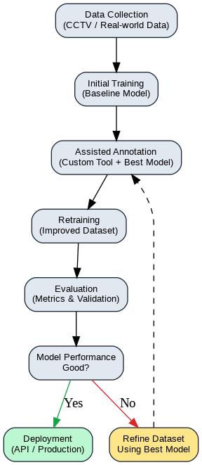
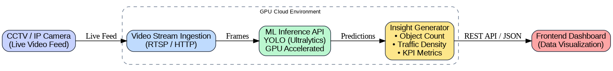

Live CCTV Traffic Object Detection System
Real-time vehicle detection, tracking, and analytics

Project Overview
This project focuses on building a real-time computer vision system using CCTV cameras to support business monitoring and data-driven decision-making.
The system was developed during my internship, where I was involved in delivering production-oriented machine learning solutions rather than purely experimental models. The solution leverages object detection to extract actionable insights from live camera feeds, enabling businesses to monitor performance, behavior, and traffic patterns in real-world environments.
The main objective was to design and deploy a scalable machine learning system that could operate reliably under real-world constraints while delivering measurable business value.
Business Problem
This project addressed a business use case from a food & beverage client planning to open over 100 outlets across Jakarta. They needed objective traffic data to identify optimal store locations. Manual observation and assumptions introduced high business risk, so automated, scalable traffic analysis from CCTV footage was required.
Key Challenges
- Large volumes of unstructured image data and the need to process footage in near real-time.
- Data annotation bottleneck: thousands of images requiring bounding box labels with multiple objects per image.
- Data quality variability: differing lighting, angles, resolution, and occlusion affecting model performance.
- Delivery expectations: production-ready system requirements despite internship constraints.
Technical Approach
I designed an end-to-end machine learning lifecycle emphasizing iteration, scalability, and deployment readiness. The strategy focused on building a system that could continuously improve via iterative data collection and model refinement while remaining practical to deploy in production.
Machine Learning Lifecycle
- Data collection from real CCTV camera feeds
- Manual labeling on an initial subset of images
- Training an initial object detection model
- Using the trained model to assist auto-annotation
- Refining labels and retraining stronger models
- Deploying the model as an API for real-world testing
Assisted Data Annotation Solution

To address the annotation bottleneck, I designed and built a GUI-based annotation tool that passed thousands of images through an existing trained model to generate auto-annotations. These were reviewed and exported in YOLO format, substantially reducing manual labeling time and cost. The solution received positive feedback from a senior AI engineer for its practicality.
Model and Framework Selection
For object detection I chose YOLO (Ultralytics) because of its stability, active community, availability of pre-trained models, and fast training/inference suitable for real-time applications.
Deployment and System Integration

The trained model was containerized with Docker and exposed via RESTful APIs using FastAPI and Flask. This enabled seamless integration with frontend dashboards and consistent deployment across environments, allowing pilot testing in multiple real-world locations.
Tech Stack Summary
- YOLO (Ultralytics)
- Object Detection
- Computer Vision
- Python
- Jupyter Notebook
- OpenCV
- FastAPI
- Flask
- Docker
- RESTful APIs
Lessons Learned
- Data quality and annotation strategy are as important as model selection.
- Iterative development enables faster learning and better results.
- Clear communication between technical and non-technical stakeholders is critical.
- Deployment and system integration are essential for real business impact.
Closing
This project strengthened my interest in building data-driven systems that operate in real-world environments, where practical constraints, trade-offs, and measurable impact matter as much as algorithms.